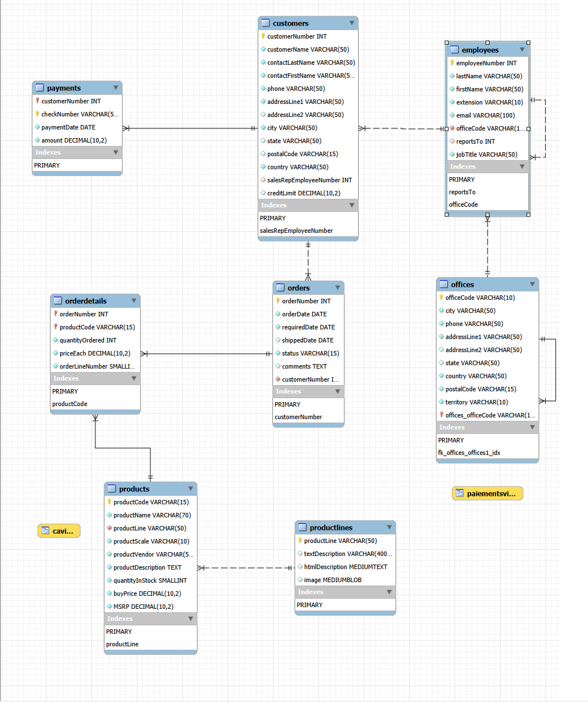
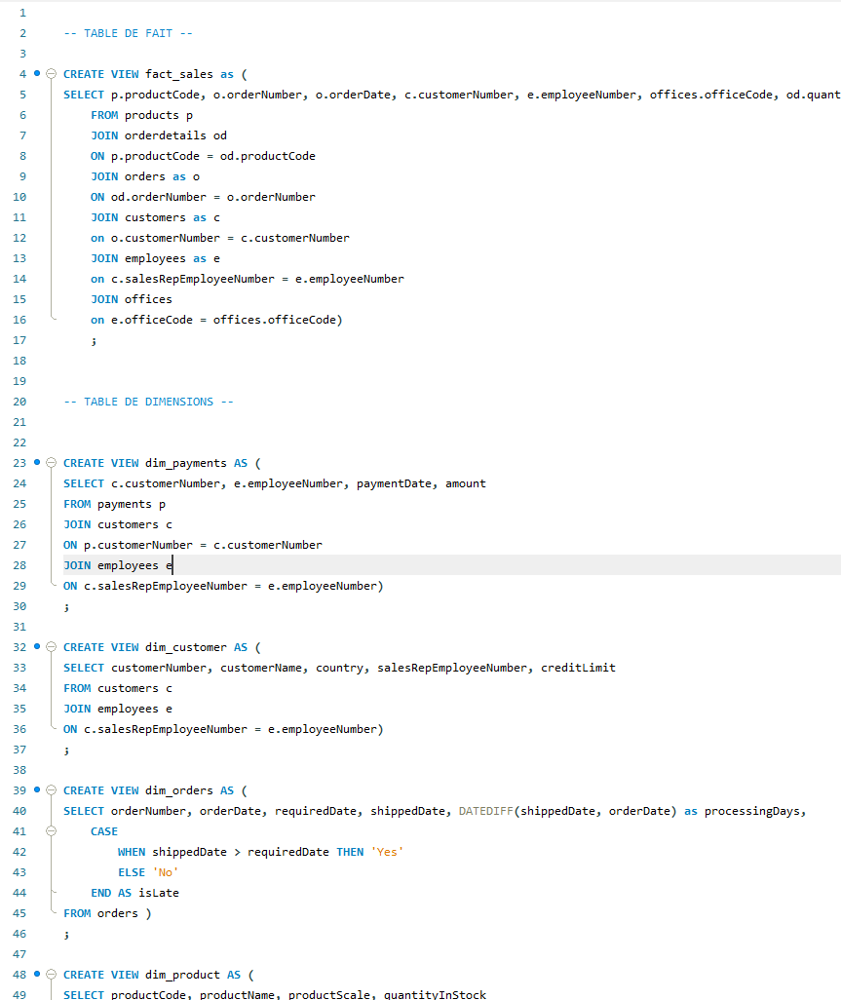
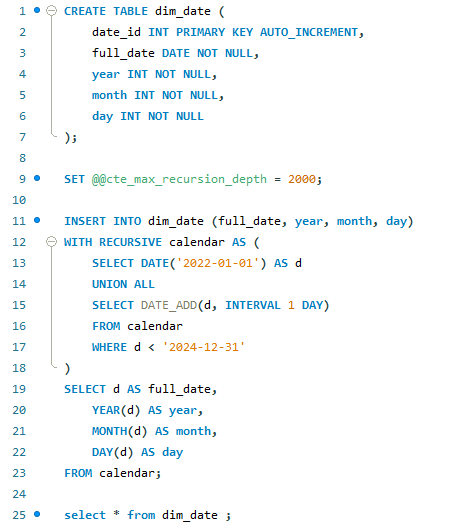
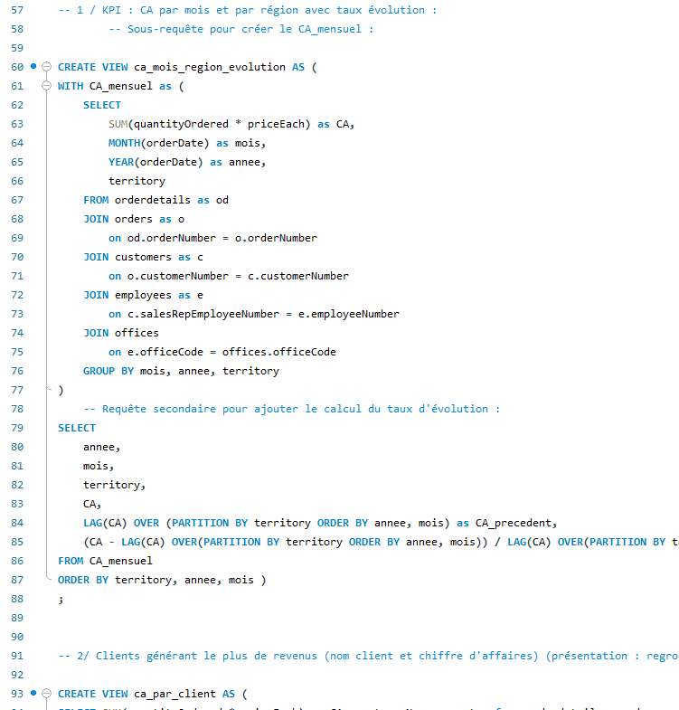
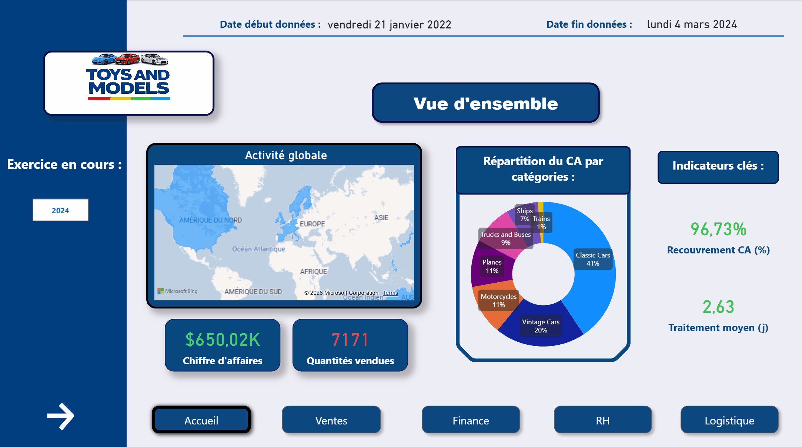
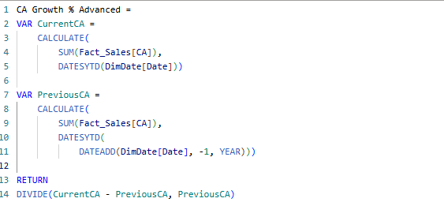
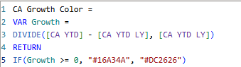

Toys and Models
Exploration d'une base relationnelle, modélisation en étoile, vues SQL orientées reporting, puis construction d'un dashboard Power BI interactif avec mesures DAX avancées.
 Dashboard
Dashboard
Page d'accueil du dashboard
Analyse du schéma relationnel

Première étape : comprendre la base transactionnelle (clients, commandes, produits, paiements), identifier les clés étrangères et les potentielles relations.
- 8 tables sources : customers, orders, orderdetails, products, productlines, payments, employees, offices.
- Relations many-to-one identifiées et documentées.
- Clés primaires et étrangères vérifiées avant toutes jointures.
Construction des vues de reporting
À partir du schéma, j'ai construit un ensemble de vues SQL dédiées au reporting : table de faits centrale, tables de dimensions, et vues analytiques complexes.

fact_sales + dimensions

dim_date — CTE récursive

CA mensuel + LAG() N/N-1
Ce que ces vues couvrent
- Jointures multi-tables (orders, orderdetails, customers, products, payments, employees, offices)
- Construction de la logique métier via sous-requêtes SQL (
CTE/WITH) - Calculs de marges, panier moyen, top produits / top clients
- Taux d'évolution N/N-1 avec fonctions fenêtre (
LAG,PARTITION BY) - Structuration en modèle étoile : 1 fact table + 5 dimensions + dim_date
Modèle analytique & dashboard interactif
Les vues SQL ont été importées dans Power BI pour construire le modèle analytique (relations, hiérarchies, table de dates), puis des mesures DAX pour rendre les KPIs comparables dans le temps. Le dashboard couvre 5 pages dédiées : accueil, ventes, finance, RH, logistique.

Dashboard interactif — Démo live
Modèle de données
- Schéma en étoile importé depuis les vues SQL
- Table de dates connectée pour toutes mesures temporelles
- Relations one-to-many correctement orientées
Pages du dashboard
- Page d'accueil : Vue d'ensemble, KPIs à surveiller
- Ventes, Finance, RH et Logistique — pages dédiées par métier
- Informations appuyées avec des Visual Cards et mise en forme conditionnelles
Mesures avancées & mise en forme conditionnelle
DAX a été utilisé à deux niveaux : des calculs analytiques complexes
(croissance CA YTD vs N-1 avec DATESYTD et DATEADD)
et de la mise en forme conditionnelle
(couleur dynamique selon le signe de la croissance).

Calcul YTD vs N-1
Calcul de croissance avancé
Mesure utilisant DATESYTD pour l'année en cours et DATEADD(..., -1, YEAR) pour l'année précédente. Le résultat est un ratio de croissance YTD comparable sur n'importe quelle période filtrée.

Couleur conditionnelle
Mise en forme conditionnelle
Mesure retournant un code hex dynamique — #16A34A (vert) si la croissance est positive, #DC2626 (rouge) sinon. Utilisée directement dans les paramètres de formatage Power BI, sans colonne calculée.
Résultats & apprentissages
Ce que ce projet m'a appris et ce qu'il démontre.
Fiabilité
Vues SQL reproductibles, totaux cohérents entre SQL et Power BI, logique de calcul documentée et versionnable.
Lisibilité
Dashboard orienté décision : KPIs en premier plan, tendances, comparaisons N/N-1, segmentation par pays et catégorie.
Scalabilité
Modèle en étoile pensé pour accueillir de nouvelles dimensions ou indicateurs sans refonte du schéma.